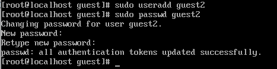
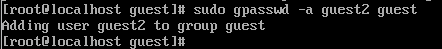
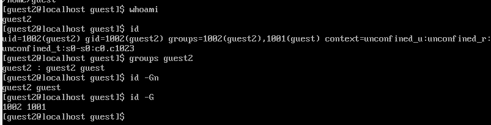
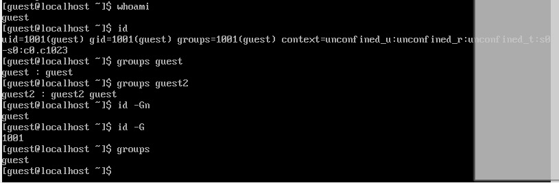
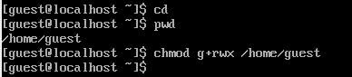
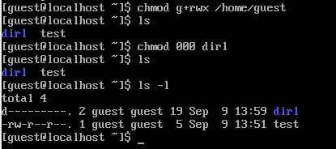

Получить практические навыки работы в консоли с атрибутами файлов для
групп пользователей.
Задание
Создание пользователя guest2, добавление его в группу пользователей
guest
Заполнение таблицы 3.1
Заполнение таблицы 3.2 на основе таблицы 3.1.
Выполнение лабораторной
работы
Пользователь guest был создан в лабораторной работе №2, поэтому в
этой лабораторной работе его не создаем заново
Пароль для пользователя guest тоже был задан в лабораторной работе
№2.
С правами администратора создаю пользователя guest с помощью команды
useradd, далее с помощью команды passwd задаю
пароль пользователю (рис. 1).

Создание пользователя
Добавляю пользователя guest2 в группу guest (рис. 2).

Добавление пользователя в
группу
Зашла на двух разных консолях от имени двух разных пользователей с
помощью команды su <имя пользователя> (рис. 3).
Вход в терминал от имени другого
пользователя
Проверяю путь директории, в которой я нахожусь с помощью
pwd.
Проверка для пользователя guest (рис. 4).
Текущая директория для guest
Проверка для пользователя guest2 (рис. 5).
Текущая директория для
guest2
Стоит отметить, что вход в терминал от имени пользователей был
выполнен в домашней директории пользователя evdvorkina, которую команда
pwd вывела. Домашней директорией пользователей она не
является. Текущая директория с приглашением командной строки
совпадает.
Проверяю имя пользователей с поомощью команды whoami, с помощью
команды id могу увидеть группы, к которым принадлежит пользователь и
коды этих групп (gid), команда groups просто выведет список групп, в
которые входит пользователь.
id -Gn - выведет названия групп, которым принадлежит пользователь
id -G - выведет только код групп, которым принадлежит
пользователь.
Проверка для пользователя guest2 (рис. 6).

Информация о пользователе
guest2
Проверка для пользователя guest (рис. 7).

Информация о пользователе
guest
Пользователь guest2 входит в две группы пользователей: в группу
guest, потому что я сама его туда добавила, и в группу guest2, которая
создалась автоматически при создании пользователя.
Вывела интересующее меня содержимое файла etc/group, видно, что в
группе guest два пользователя, а в группе guest2 один (рис. 8).
Содержимое файла etc/group
От имени пользователя guest2 регистрирую его в группе guest с
помощью команды newgrp (рис. 9).
Регистрация пользователя в
группе
Добавляю права на чтение, запись и исполнение группе пользвателей
guest (guest, guest2) на директорию home/guest в которой находятся все
файлы для последующей работы (рис. 10).

Изменение прав директории
От имени пользователя guest снимаю все атрибуты с директории dir1,
созданной в предыдущей лабораторной работе. Проверяю, что права
действительно сняты (рис. 11).

Изменение прав директории
Выводы
Были получены практические навыки работы в консоли с атрибутами
файлов для групп пользователей
Список литературы.
Библиография
[0] Методические материалы курса
[1] Права доступа:
https://codechick.io/tutorials/unix-linux/unix-linux-permissions
[2] Группы пользователей:
https://losst.pro/gruppy-polzovatelej-linux#Что_такое_группы